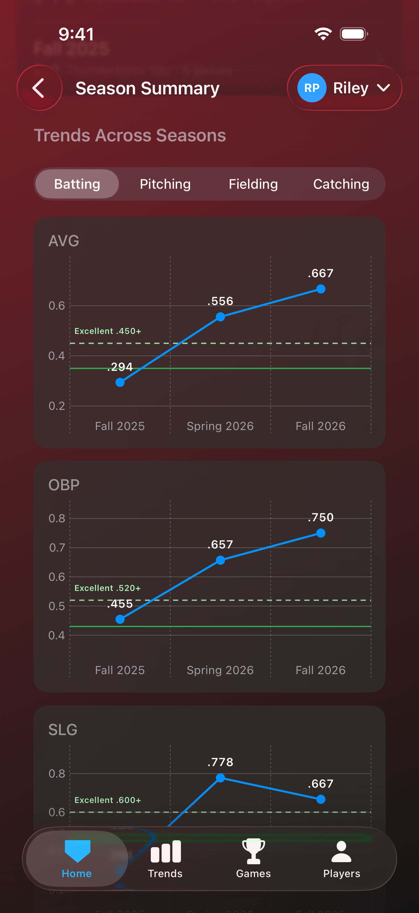
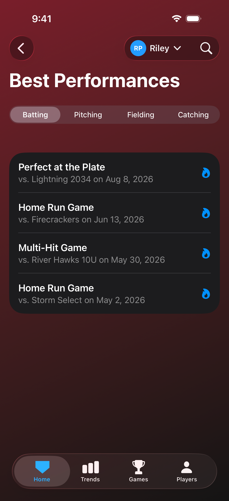
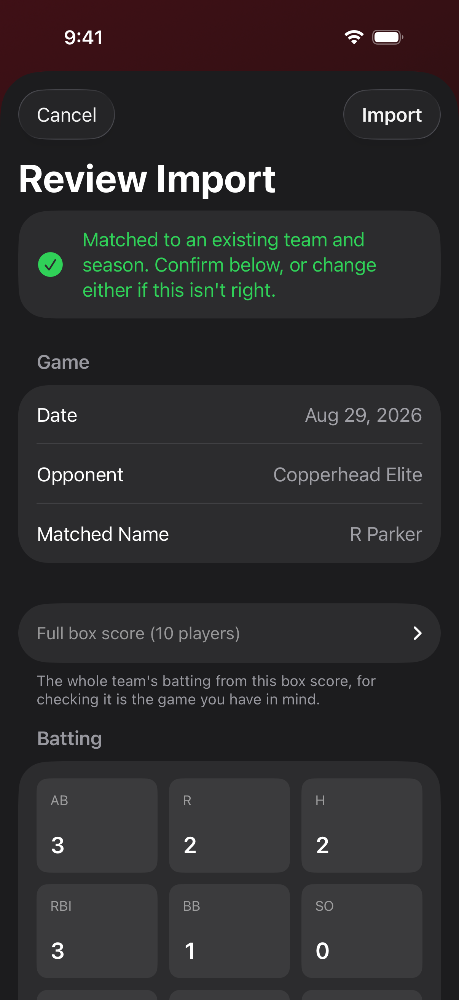
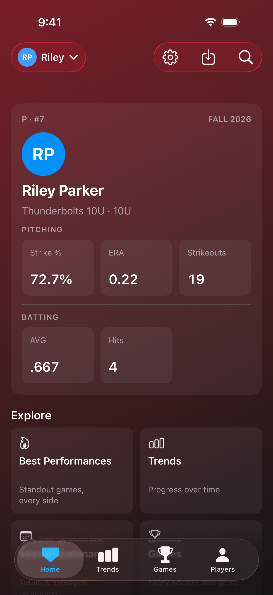
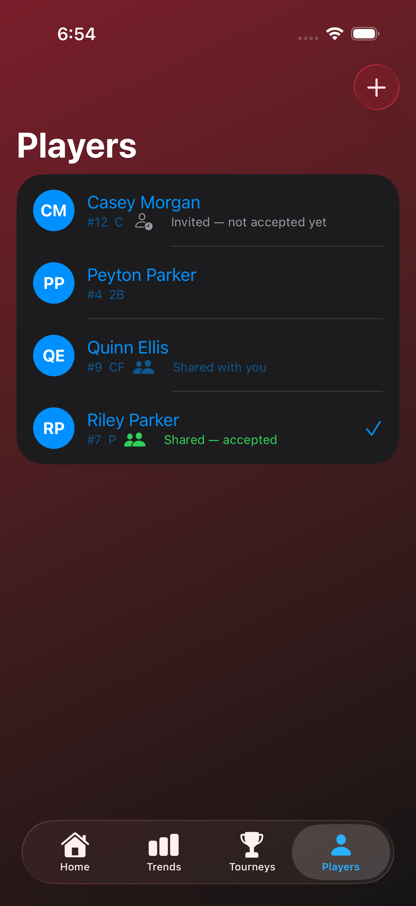

See progress take shape
A single box score tells you how one game went. Full Count charts every game your player has recorded, so you can see the direction they are heading.
Every rate stat gets its own chart across the full history: strike percentage, WHIP, ERA, strikeouts and walks per inning on the pitching side, and batting average, on-base percentage, slugging and OPS at the plate. Once a second season is complete, the same stats are plotted season over season, one point per season, so a year of work reads as a single line.
The charts narrow to whatever span you want to look at: a full career, one season, the last ten games, or any date range. The season totals follow the same selection.

Standout games, found for you
Full Count reads every game as it is imported and marks the ones that stand out, so a career day is never buried under a season of ordinary box scores.
At the plate that means a home run game, three or more hits, a perfect day with a hit in every at bat, and the cycle. In the circle it means a no-hit or perfect outing, with a minimum workload attached so that a single relief out cannot claim either.
Best Performances gathers them on one screen, batting and pitching behind a toggle, across the whole career rather than the current season alone.

Stay competitive with performance targets
A .320 average means one thing at 10U and something quite different at 14U. Full Count draws performance targets on the game log charts for the age division a season was actually played in, so every number is read against the level your player was competing at.
Two tiers are marked, Good and Excellent beyond it. They cover strike percentage, ERA, WHIP, strikeouts and walks per inning, batting average, on-base percentage, slugging, OPS and plate discipline, with separate softball and baseball tables from 8U through 18U.
The targets travel with the season, so an earlier season is never re-graded against a standard it was not played under. Where no honest target exists for a stat at a given age, the chart says so rather than showing a number nobody stands behind. The tiers reflect coaching consensus rather than published league data, because no league publishes any.

Easy box score import
Importing a game into Full Count takes one step. Send the box score and choose your player. The game is filed with its team, its season and its opponent already worked out, and it appears immediately in the charts, the season totals and Best Performances.
Two kinds of box score work. If you hold Team Staff access in GameChanger, you can export the game as a PDF. If you do not, screenshots of the box score are enough on their own, which means you never need anyone's permission to keep a full record of your own player's season.
Screenshots do not have to be sorted or renamed first. Each one carries its game at the top, so a tournament's worth of them return to the games they came from, including two meetings with the same opponent on the same day.
Full Count is deliberately flexible about how files arrive: one at a time or in bulk, loose or gathered into a ZIP, PDFs or screenshots or a mixture of the two, from your phone or from cloud storage. Every way to import is covered in the questions and answers.

A stat view that is yours
Choose which stats lead the Home screen, and whether stat pages open on batting or pitching first. A pitcher's family can put ERA and strike percentage front and centre. A slugger's can lead with average and total bases.
Game lists lead with the score and the result, so scrolling a season reads the way the season actually went. Your Home tiles, your batting or pitching default and your performance target preference follow your Apple ID, so replacing a phone does not start you over.

Family sharing through iCloud
Share a player once and every phone stays current. Imports appear on each family member's device automatically, with a notification when someone adds a game. Access is granted per person: View Only for relatives who follow along, or View and Edit for a second parent who imports games. Full Count requires no account and relies on no third-party services; your data is stored on your device and in your own iCloud.
